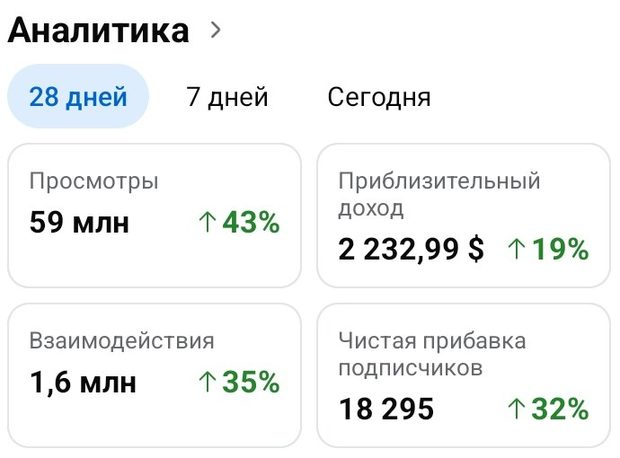
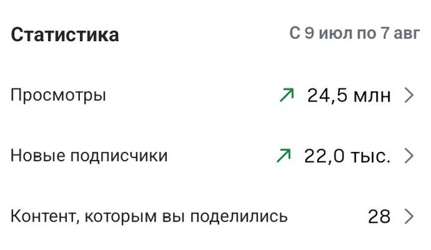
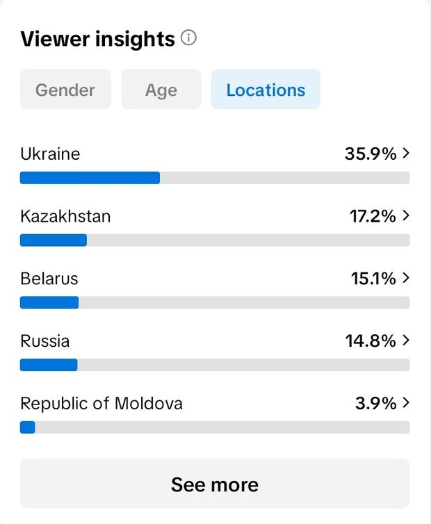
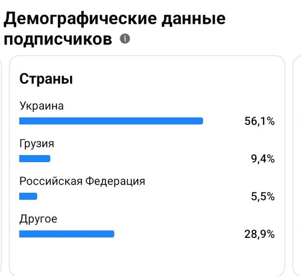
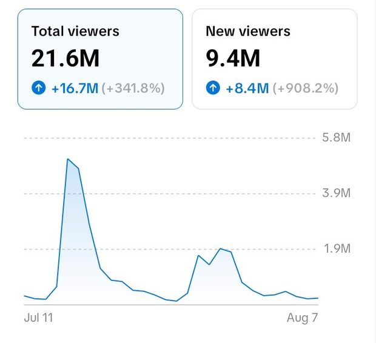
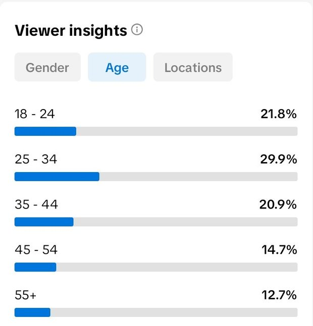
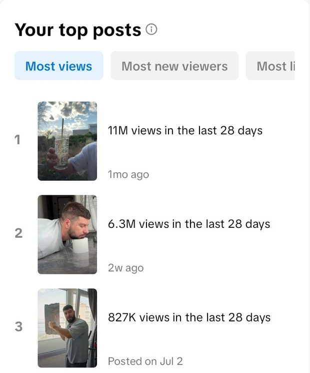

THE DETAILS BEHIND THE NUMBERS
Good stories.
Clear evidence.
These notes distinguish account history, selected video results and the offer for a future collaboration. Every figure is a recorded snapshot. None of the counters on this website updates live.
01 / SELECTED COLLABORATIONS
Eight videos. Approximately 6.45M views.
The eight displayed, rounded TikTok view counts sum to 6,450,000. They come from the original media kit, which labels them as recorded on 16 September 2026. They are selected examples, not a representative average, a promise of future performance or a unique audience count.
| Collaboration | Recorded views | Original video |
|---|---|---|
| OUKITEL | 1.4M | Watch TikTok ↗ |
| Formo | 1.1M | Watch TikTok ↗ |
| Formo | 792K | Watch TikTok ↗ |
| MAONO | 715K | Watch TikTok ↗ |
| Formo | 682K | Watch TikTok ↗ |
| Formo | 635K | Watch TikTok ↗ |
| OUKITEL | 578K | Watch TikTok ↗ |
| Formo | 548K | Watch TikTok ↗ |
The original OUKITEL image filename contains “576k”; the visible source caption says 578K. This kit follows the visible caption. The original stills are preserved without generated replacements.
Back to the work02 / RECENT CASE
OUKITEL WP63
Creator-supplied screenshots reviewed on 28 October 2026 record the figures below. The results are shown separately by platform. The screenshots are not reproduced here; the original posts are linked, and supporting analytics can be discussed with the creator. The published post counters may have changed since the screenshots.
| Platform | Recorded figure | Source post |
|---|---|---|
| TikTok | 822.4K views 6,857 saves 6,870 shares | Watch TikTok ↗ |
| 277K Reel views | Watch Instagram ↗ |
This later example is separate from the eight-video, 6.45M selection above.
03 / HISTORICAL ACCOUNT ACTIVITY
120M reported views, with context.
The sum is 59M + 31.8M + 24.5M + 4.7M = 120M, using rounded figures from the original July–August 2026 media kit. It describes past activity across the accounts. It does not describe what a single campaign buys or guarantee the exposure a placement will receive.
| Platform | Views | Reporting context |
|---|---|---|
| 59M | The original dashboard screenshot says “28 days”. Exact start and end dates are not visible. | |
| TikTok | 31.8M | Transcribed in the original media kit, under its 9 July–8 August 2026 heading. A screenshot of this total view count is not included there. |
| 24.5M | The original screenshot explicitly shows 9 July–7 August. The year 2026 comes from the source media kit. | |
| YouTube | 4.7M | Transcribed in the original media kit, under its 9 July–8 August 2026 heading. A screenshot of this total view count is not included there. |




04 / AUDIENCE DEFINITIONS
Viewers, followers and views are different.
- Views count viewing activity. Repeat views and cross-platform overlap can be included.
- Viewers refer to people as defined by the platform for that reporting window. Platform-level unique viewers are not deduplicated across platforms.
- Non-followers are accounts that do not follow the creator. They are not necessarily new people or people who have never seen the account.
- Follower geography describes subscribers. It is not campaign view geography and should not be compared directly with viewer geography as if the two were equivalent.
- Organic distribution varies. An account’s historical country mix does not promise a country mix for an individual placement.










05 / COLLABORATION & PROVENANCE
Start with the right story.
Collaboration formats include a TikTok product video, an Instagram Reel, a Facebook Reel, or one produced video published across all three. A tailored proposal follows an initial conversation about the product, audience and creative goal.
The scope, product testing, approvals, timing and usage rights are agreed in the campaign brief. Standard collaborations are non-exclusive; paid advertising rights, exclusivity and raw files are agreed separately. Historical performance does not set the terms of a future campaign.
The original website source and images are preserved in the public media-kit repository at the source revision ↗. Its reporting dates and captions, rather than asset filenames or inferred calendar ranges, inform the notes above.
Discuss a collaboration